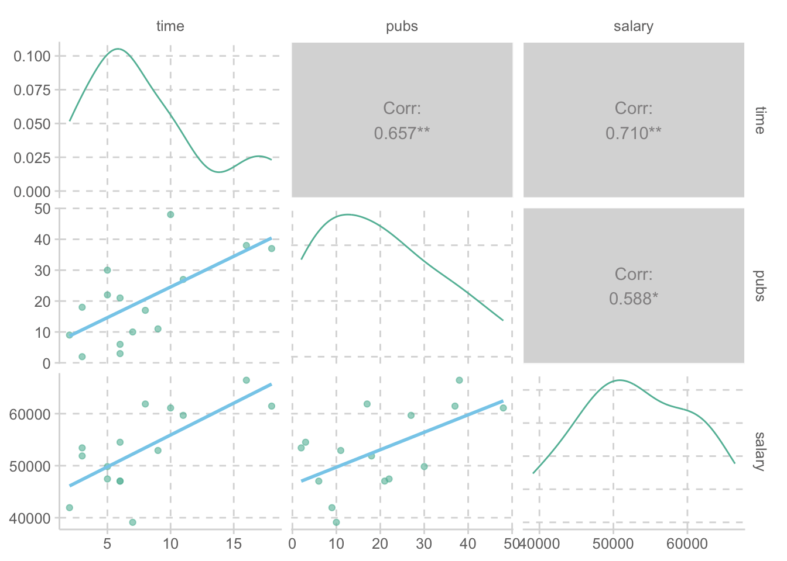
양적 기술 설계 (13장)
상담연구방법론, by Heppner, P. P., Wampold, B. E., Owen, J., Thopso, M. N.
부제: 현상에 대한 기술, 설명, 예측
- 실험적 조작없이 주로 수동적 관찰을 통한 자료 수집; observational study
- 진실험/준실험과 구별되는 점을 파악하는 것으로 충분
대략적으로 나눈다면,
- 구체적 가설을 갖고 자료를 수집하고 분석하는 경우: 관찰 연구의 한계를 인식/극복
- 인과추론의 목적을 갖고 적극적/체계적 설계
- 실험 설계를 할 수 없는 연구들에 적용
- 탐색적인 방향성을 갖고 단순히 현상을 파악하거나 가설의 기초를 마련하는 경우
- 변수들의 관계성이나 변량의 특성을 보기 위한 시도
Note
Colider Bias
운동능력이 뛰어나면 지능이 떨어지는가? 
실험적 조작 대신 평가/측정 도구의 질이 연구의 질을 결정함.
보통 큰 표본을 이용해 모집단에 대한 추론을 중요하게 여김.
3가지로 유형/쓰임을 나누어 보면,
- 조사 또는 역학 연구; survey or epidemiological study
- 변수 중심 연구
- 사람 중심 연구
(설문) 조사 또는 역학 연구 설계
Survey or epidemiological study
- 사회과학에서 가장 오래되고 널리 활용
- 보통 자기보고로 이루어짐
- 설문지, 면접, 웹사트 등을 통해 자료 수집
- 기술(descriptive) 연구는 현상/변수에 대한 기본적 정보를 제공
- 대학 캠퍼스 내 범죄 빈도
- 소수 민족의 정신건강
- 설명적(explanatory) 연구는 현상의 발생을 설명할 가능성이 있는 변수들을 파악하여 가설과 추측을 검증
- 대학 캠퍼스 내 범죄와 관련된 요인을 파악: 여성에 대한 신념, 신체 공격에 대한 신념
- 소수 민족의 정신건강에 미칠 수 있는 요소들 파악: 문화적 동화, 사회 연결망
상담연구에서 조사 연구는 특정한 학생집단의 욕구를 조사하는데 많이 활용됨.
- 외국인 학생들의 상담 서비스 활용과 정신건강 욕구 조사 (Hyun, Quinn, Madon, & Lustig, 2007)
- 수감되어 있는 엄마들의 진로상담 욕구 조사 (Laux et al., 2011)
욕구/지각의 변화를 알아보기 위한 종단 연구들
- 진로발달에 대한 연구로, 초등학교 2학년부터 고교 졸업 후 5년간 추적 조사 (Helwig, 2008)
Abstract (번역 by DeepL) 1987년, 208명의 초등학교 2학년 학생을 대상으로 직업에 대한 포부와 기대, 학교에 대한 호불호, 교육 계획 및 기타 변수에 대한 인터뷰를 실시했습니다. 고등학교 3학년이 될 때까지 2년마다 재인터뷰를 실시했습니다. 고등학교 졸업 후 5년 동안 추적 조사를 실시하여 원래 표본의 청년 35명(23세)이 자세한 설문지를 작성했습니다. 청년들은 고등학교 3학년이 되었을 때보다 고등학교 때 진로 방향과 준비가 현저히 적었다고 답했습니다. 같은 가족 내 3세대 간의 교육 및 직업 성취도에 대한 비교를 실시했습니다. 자녀의 진로 개발에서 교사와 부모의 중요성에 대해 논의했습니다.
집단 간 비교 연구
- 다양한 인구학적 변수들에 걸쳐 수련생들의 자기효능감 수준을 조사 (Lam, Tracz와 Lucy, 2013)
- 아시아계와 백인 학생들이 다른 인종 집단보다 낮은 수준의 상담 자기효능감을 보고
역학 연구 (epidemiological study): 특정 집단 내 문제의 패턴, 원인, 결과를 연구
- 공중보건 문제와 관련된 위험요인을 파악하기 위해 사용
- 고전적 연구의 예: 콜레라
- 사망율이 높은 특정 지역을 파악하여, 감염의 발원을 추적해 특정 물 펌프가 원인임을 밝힘
조사 연구의 예
라틴계 미국인의 정신건강과 관련된 요인들을 파악하기 위해 연구 자료를 활용 (Cook, Alegria, Lin & Guo, 2009)
- NLAAS(National Latino and Asian American Study)의 자료를 활용
- 라틴계 이민자 vs 미국에서 태어난 라틴계 미국인
- 정신 장애 가능성을 예측
- 미국 체류 기간이 길수록 정신 장애 가능성이 높아진다는 선행 연구
- 2,554명의 다양한 라틴인들을 대상으로 여러 변수들을 측정
- 이민자들이 차별에 대한 인식과 가족 갈등의 경험이 더 적었음
- 미국에서의 긴 문화 간 상호작용과 불공평/차별적 대우로 인해 인식이 높아졌을 것으로 추론
- 미국 문화에 조율된 가치와 규범을 발달시켜 가족 구성원과의 세대 간 갈등을 높혀 보호요인이었던 유대관계가 약화된 것으로 추론
조사 연구에서 설계 문제
4가지 주요 활동:
- 모집단 정의하기
- 질문지/측정 도구를 개발하거나 선택하기
- 자료 수집 방법을 선택하고 개발하기
- 자료 분석
모집단 정의하기
- 보통 연구자는 미리 (실험 연구에서 처럼) 집단을 만들지 않음.
- 비교를 위해 집단을 의도적으로 만들어 표집하기는 하지만, 무선 배정 같은 것은 없음.
- 예를 들어, 남/녀, interns vs practicum students, clinical psychology programs vs counseling psychology programs.
- 구할 수 있는 표본에 대해 연구를 실시하는 것이 일반적임.
- 예, NLAAS의 경우, 라틴계와 아시아계 미국인을 대상
- 실험적 조작이 없으나 설문에서 어느 정도 첨가할 수 있음
- 서로 다른 질문 세트에 대해 반응을 비교
- 온라인 서베이 툴의 경우 복잡한 flow를 제공
질문지
- 보통, 기존의 신뢰할 만한 질문지를 활용
- 새로운 문항을 개발하는 것은 쉽지 않음.
문화적, 언어적, 경제적으로 다양한 사람들로 구성된 표본을 대상으로 한 측정의 어려움들
- 질문지를 현재 집단에 맞게 변경할지 고민
- 연구자가 의도한 방식대로 이해할까?
- 질문의 포맷에 적절히 반응할까?
- 특정 집단에게 무례한 질문일까?
- 인터뷰를 포함한 예비조사(pilot study)를 통해 언어나 포맷을 검토/수정하는 것이 바람직
- 모국어를 모르는 참여자들의 경우
- 번역/역번역을 통해 정확히 질문지를 번역
- 문화적인 의미도 동일한지 이중언어 구사자의 검토가 필요
자료 수집
현실적으로 접근 가능한 표본을 대상으로 수집하나 모집단을 잘 반영하는지 검토가 필요
- 예를 들어, 라틴계 미국인의 심리적 장애를 탐구하려면, 표본이 성, 지역, 연령, 출신국, 사회경제적 지위 등에서 대표적이어야 함.
- 또는 영어가 능숙한 사람들만을 초점을 맞춘다면, 이민자들이 배제되어 결과가 편향적일 수 있음.
무선 표집(random sampling)이 이상적이나 현실적으로는 어려움.
층화 무선 표집(stratified random sampling)을 통해 모집단의 특성을 잘 반영하는 표본을 구성할 수 있음.
- 예를 들어, 여성이 전체 55%를 차지한다면, 1000명의 표본에서는 여성이 550명를 차지하도록 함.
자료 수집 방식
- 가장 흔한 자료 수집은 자기보고식 질문지: 우편, 온라인 질문지
- 설문 응답율을 높이기 위해 노력: 독려 메세지 등
- 최소 50% 회수율을 적절한 것으로 간주
- 웹사이트를 이용
- 참여자 모집을 위해 발송되는 이메일을 누가 받고, 누구 읽었는지 알기 어려움
- 참여율 확인이 어려움.
- 자료 선별을 위해 준거에 맞는지 확인하는 변수들을 포함.
- 설문을 주의 깊게 읽었는지는 확인하는 문항을 포함.
- 크라우드소싱
- 온라인 커뮤니티(인력 풀)에서 참여자에게 부탁하여 자료를 수집
- 아마존 MTurk, Prolific, Qualtrics Panels 등
- 자료의 질에 대한 회의적 의견이 있음.
- 꽤 신뢰할 만하고 일관성 있음.
- 한편, MTurk 참여자들이 내향적이고, 낮은 자아존중감을 보이며, 스트레스를 표현하려는 동기가 강한 것으로 나타남.
- 연구의 핵심 준거에 맞도록 선별하는 작업이 필요.
소수자 집단을 대상으로 하는 경우,
- (백인 중류층을 대표하는) 연구자를 신뢰하지 않고, 좀 더 방어적일 수 있음.
- 낮은 반응 비율의 원인을 파악할 필요.
자료 분석
- 우선적으로, 자료의 적절성을 평가: 표본이 모집단을 얼마나 반영하는가?
- NLAAS에서는 센서스 자료와 비교되었음.
- 종단 연구의 경우, 중도탈락한 사람들에 대한 검토가 중요
- 예를 들어, 대학생의 경우, 성, 학년, 전공, 학점 등에게 다른가?
- NLAAS와 같은 대규모 국가적 조사의 활용
- 지역 코드나 주소가 있다면, 참여자 동네 대한 인구학적 정보를 활용할 수 있음: 인구, 소수자 비율, 수입, 교육 수준 등
- 새로운 자료를 수집할 필요없이 여러 연구를 수행할 수 있음
- NLAAS은 50편이 넘는 출판물을 내었음.
변수 중심 연구 설계
- 변수 간의 진실한 관계를 파악
- 통계 기법의 도움을 받아 인과 관계를 추론하려고 노력
- 통계적 통제(statistical control)를 통해 confounding을 제거하려고 노력
- 인과 구조에 대한 통계적 모형을 세워 자료와 일치하는지 검증: 구조방정식 모형 (SEM)
- 넓게는 인과분석(causal analaysis)의 툴이 요구됨
단순 상관/단순 회귀
두 변수 간의 correlation(상관관계)는 두 변수 간의 영향관계에 대한 방향성을 전제하지 않는 반면,
회귀분석은 한 변수가 다른 변수에 영향 미친다는 것을 전제로 하고, 그 영향의 형태와 크기를 분석.
예측변수가 한개인 회귀분석: Simple Regression
- 두 변수 간의 관계(association)을 파악: \(Y=f(X)=b_0 + b_1X\)
- 그 관계의 크기(strength)를 측정
- \(f\)에 의해 \(X\)로 \(Y\)를 얼마나 정확히 예측할 수 있는가?
- \(f\)에 의해 \(X\)의 변량이 \(Y\)의 변량을 얼마나 설명할 수 있는가?
Pearson’s correlation coefficient: \(r\)
선형적 연관성의 정도를 측정
- x와 y의 선형적 연관성: [-1, 1]
- x로부터 y를 얼마나 정확히 예측가능한가?
- x와 y의 정보는 얼마나 중복(redundant)되는가?

Multiple correlation coefficient: \(R\)
Extented correlation: 예측치와 관측치의 pearson’s correlation
- \(R\)을 제곱한 \(R^2\)가 설명력의 정도를 나타냄
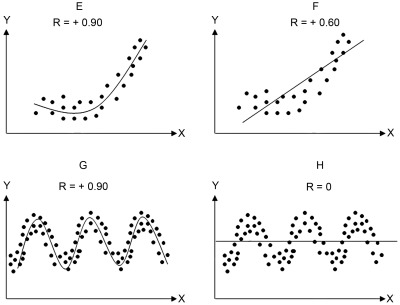
Pearson correlation coefficient (\(r\)): 두 변수 간의 선형적 연관성의 크기를 파악
\(r\): Pearson correlation coefficient
- \(r_{XY} = \displaystyle 1 - \frac{\sum{(z_X - z_Y)^2}}{2n}\) \(z_X, z_Y\) : 각각 standardized \(X, Y\)
\(R\): Multiple correlation coefficient
- \(Y\) 와 \(\widehat Y\) 의 Pearson correlation 즉, Y와 회귀모형이 예측한 값의 (선형적) 상관 관계의 정도; 회귀모형의 예측의 정확성
- 다시말하면, 예측변수들의 최적의 선형 조합과 Y의 상관 관계의 정도.
\(R^2\): Coefficient of determination, 결정계수, 설명력
- 선형모형에 의해 설명된 Y 변량의 비율
- 또는 예측변수들의 최적의 선형 조합에 의해 설명된 Y 변량의 비율.
- \(f\)에 의해 \(X\)로 \(Y\)를 얼마나 정확히 예측할 수 있는가?
- \(f\)에 의해 \(X\)의 변량이 \(Y\)의 변량을 얼마나 설명할 수 있는가?
- 관계의 크기(strength)를 측정
즉, \(\displaystyle\frac{V(\widehat{Y})}{V(Y)}\) 또는 \(\displaystyle 1 - \frac{V(e)}{V(Y)}\)
중다회귀 (multiple regression)
2개 이상의 예측변수로 종속변수를 예측
- 보통 독립변수(independent variable)를 예측변수(predictor)로 많이 부름
- 종속변수(dependent variable)는 종종 반응변수(response, outcome variable) 또는 준거변수(criterion)로 부름
- 회귀분석은 상관관계에 기초하기는 하지만, 인과관계를 추론하기 위한 툴이므로, 원인과 결과에 대해 전제하고 분석함.
- 회귀분석으로부터 인과관계를 파악하는 것은 많은 노력을 요함.
Source: Applied Multiple Regression/Correlation Analysis for the Behavioral Sciences by Jacob Cohen, Patricia Cohen, Stephen G. West, Leona S. Aiken
Asner-Self & Marotta (2005)의 연구
- 전쟁 관련 외상에 노출되었던 68명의 중앙아메리카 이민자들을 대상
- 심리적 스트레스(우울, 불안, 외상성 스트레스)(DV)에 대한 예측변수들(IV)을 검증: 1) 불신, 2) 정체성 혼란, 3) 고립
- 세 하위 척도 각각이 다른 두 하위척도와는 독립적인(independent)/고유한(unique) 심리적 스트레스에 주는 영향을 파악할 수 있음.

Pina-Watson, Jimenez & Ojeda (2014)의 연구
- 멕시코계 미국인 여대생을 대상으로
- 1) 진로결정 자기효능감, 2) 지각된 교육 관련 장벽, 3) 독립적 자기-구인(independent self-construal)(IVs)이 삶의 만족(DV)을 얼마나 예측하는가를 검증
- 이 때, 사회경제적 지위(SES)와 세대 지위(genertional status)가 설명하는 것 이상으로 DV를 설명하는지 검증
- Generational status: 1st: immigrants, 2nd: (U.S. born, parents were immigrants), 3th (parents were U.S. born), 4th: (grandparents were U.S. born), 5th: (great grandparents were U.S. born)

조절 효과와 매개 효과 검증: 주요한 두 연구 방법
모두 회귀분석의 원리를 응용한 것임.
조절 변수
- 조절 변수(moderator): 종속변수와 독립변수 간의 관계에 영향을 미치는 변수
- 상호작용 효과(interaction effect)이라고도 함.
- 이러한 분석이 상관관계에 기초한다는 점에서 항상 인과관계에 대해서는 더 깊은 연구가 필요함!
고전적 예:
- “부정적 사건과 우울 사이의 관계를 사회적 지지가 조절할 것으로 예측한다.”
- 사회적 지지가 높을수록, 부정적 사건이 우울로 덜 이어질 것임.
- 즉, 사회적 지지가 두 변수 간의 관계를 “조절(moderate)”한다고 표현
- 혹은 사회적 지지와 부정적 사건이 “상호작용(interact)”하여 우울에 영향을 미친다고 표현
- 특히 이 경우는 사회적 지지가 “보호 요인(protective factor)”이라고 표현; 반대는 “위험 요인(risk factor)”이라고 표현
앞서 본 상호작용 효과 예들: 조절 변수가 범주형 변수인 경우
Wei, Wang, Hwppner와 Du (2012)의 연구
- 383명의 중국인 유학생을 대상으로 인종적 차별의 경험을 PTSD로 이해하고 그 부정적 효과의 보호요인을 연구
- (미국) 주류사회와 사회적 연결감(mainstream social connectedness) vs. (중국) 민족적 사회적 연결감(ethnic social connectedness): acculturation(문화 적응)과 관련된 요인들
- 이 때, 일반적 스트레스(general stress)를 뛰어 넘어서 (above and beyond)도 여전히 차별이 PTSD를 높이는지 검증
- 또는 일반적 스트레스와는 독립적인/고유한(unique) 효과가 있는지 검증
매개 변수
- 독립변수가 종속변수에 어떻게(how) 영향을 주는지를 파악. 즉, 기제(메커니즘)을 파악
- 매개 효과는 인과에 대한 강력한 주장을 하는 것이므로, 많은 검증을 요함.
- 추가적 실험 설계나 사전 연구들로 보완해야 함.
- 기제를 파악하는 것은 (상담) 개입의 효과가 어떻게 일어나는지에 대한 핵심 요소를 규정할 수 있고, 변화과정을 최적화 할 수 있도록 도움을 줌.
- 통계적 기법이 여러 가지로 제안되어 있음.
- 좀 더 일반적으로 여러 변수 간의 인과 구조를 파악하는 SEM(structural equation modeling)의 프레임워크로 분석함.
- 이러한 분석이 기본적으로는 상관관계에 기초한다는 점에서 항상 인과관계에 대해서는 더 깊은 연구가 필요함
Moradi와 Hasan (2004)의 연구
- 아랍계 미국인을 대상으로 차별의 경험이 자아존중감/심리적 스트레스을 어떻게 변화시키는지를 검증
- 개인 통제 (personal contol)가 상실됨에 따른 결과라고 추론

Wei, Vogel, Ku,와 Zakalik (2005)의 연구
애착을 척도 Experiences in Close Relationships Scale (ECRS; Brennan et al., 1998)로 측정 후 2개의 요인으로 나누어 불안/회피 척도로 활용
- 불안 하위 척도(18개 항목): 거절에 대한 두려움과 버려짐에 대한 강박관념을 측정; “나는 버려질까 봐 걱정된다.”
- 회피 하위 척도(18개 항목): 친밀감에 대한 두려움과 타인과 가까워지는 것에 대한 불편함 또는 의존성을 평가; “나는 파트너가 나에게 너무 가까이 다가오면 긴장한다.”
Differentiation of Self Inventory(DSI; Skowron & Friedlander, 1998)에서 두 하위 척도 사용
- 감정 반응성 하위 척도(11개 항목): 환경 자극에 감정이 넘치거나, 감정이 불안정하거나, 과민하게 반응하여 감정에 휩쓸릴 정도로 반응하는 정도를 반영; “때때로 나는 마치 감정의 롤러코스터를 타는 것처럼 느낀다.”
- 정서적 단절 하위 척도(12개 항목): 내면의 감정 경험이나 대인관계가 너무 강렬할 때 친밀감에 위협을 느끼고 타인과 자신의 감정으로부터 자신을 고립시키는 것을 반영; “나는 가족 중 누구에게도 정서적 지원을 요청하는 것을 고려하지 않는다.” (번역 by DeepL)
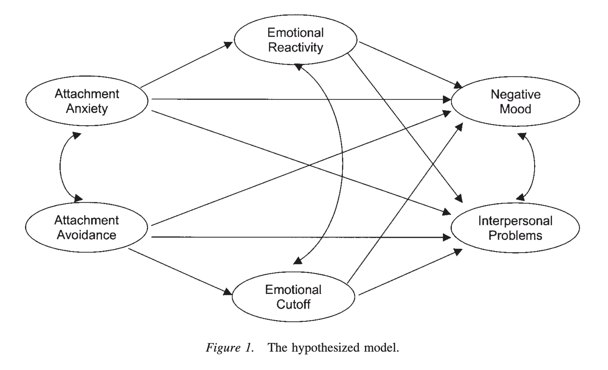

SEM (구조방정식 모형): 변수들 간의 인과 관계에 대한 가설 모형
Martens, M. P. (2005). The use of structural equation modeling in counseling psychology research. The Counseling Psychologist, 33(3), 269–298.
- 치료적 변화의 기제를 설명하는 타당한 증거를 제시하는 과정은 복잡하고 일련의 연구를 요함.
- 인과관계에 대해서는 실험 조작과 반복 검증을 통해 그 확신을 높일 수 있음.
- Kazdin(2009)의 7가지 제안 및 논의를 참고
SEM에서 모형의 적합도 지수
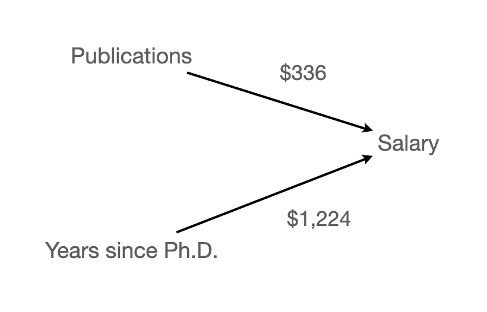
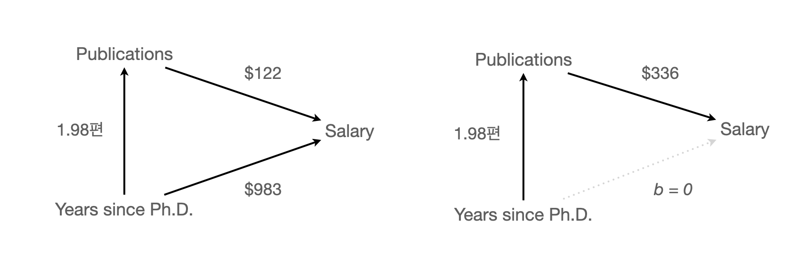
회귀계수의 비교 (Salary 단위: 1000)
salary pubs time
salary 0 0.122 0.983
pubs 0 0.000 1.983
time 0 0.000 0.000 salary pubs time
salary 0 0.336 0.000
pubs 0 0.000 1.983
time 0 0.000 0.000상관계수의 비교
salary pubs time
salary 1.000
pubs 0.588 1.000
time 0.710 0.657 1.000 salary pubs time
salary 1.000
pubs 0.588 1.000
time 0.386 0.657 1.000상관계수의 차이
actual correlation/covariance (saturated model) vs. model implied/predicted correlation/covariance matrix
- raw vs. standardized
salary pubs time
salary 0.000
pubs 0.000 0.000
time 0.324 0.000 0.000 salary pubs time
salary 0.000
pubs 0.000 0.000
time 1.963 0.000 0.000위의 covariance matrix를 이용하여 다양한 지표들로 모형의 적합도(fit indices)를 추정
- 산술적 차이나 비율등의 차이로 비교 (residual covariance matrix, 잔차 행렬)
- SRMR : 잔차 covariace 값들의 평균 정도를 수량화
- inferential vs. descriptive indices
- \(\chi^2\) : saturated 모형과 설정한 모형이 같다는 가설을 통계적으로 검정
- GFI, NFI 등
- alternatives: RMSEA, CFI 등
매개효과/조절효과의 존재 검증?
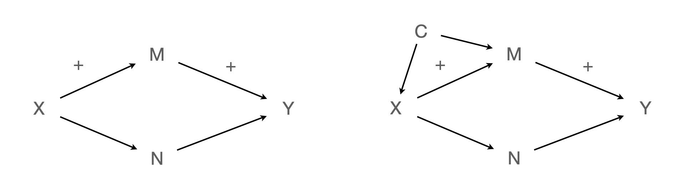
- X → M의 인과 관계를 실험적으로 검증
- M → Y의 인과 관계를 실험적으로 검증
이 때, X → Y의 인과 관계가 유추되는가?
만약, N을 거쳐가는 효과가 존재한다면?
- X → Y의 효과는 0이거나 마이너스가 될 수 있음.
- 실제 X → Y의 효과가 없는 경우에도 매개효과를 찾으려는 노력을 하기를 제안하고 있음.
- 이제 X → Y의 인과 관계를 실험적으로 검증하는 되는가?
M이 Y보다 이전에 발생한 것이라는 근거는? Y → M을 발생시킬 수 없는가?
참고, 직접 효과(direct effect) vs. 간접 효과(indirect effect)의 표현에서 직접효과라는 표현보다는 omitted mediator라는 표현을 사용하는 것이 더 적절함.
일반적인 관찰연구의 접근에서처럼 confounding을 제거하려고 매우 노력해야 함!
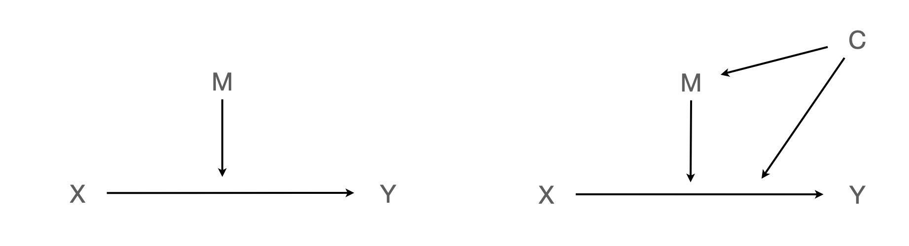
- M의 특성/수준이 X → Y의 효과를 변화시킨 것인가?
- 기본적으로, M의 특성/수준에 따라 X → Y의 효과가 “다르게 나타난다”라고 표현하는 것이 적절함.
- M으로 “인해” 관계가 바뀌었다고 이해할 수 없음.
- Common cause가 존재할 수 있음.
가령, “내면화된 수치심과 사회불안이 SNS 중독 경향성에 미치는 영향: 적응적 인지적 정서조절전략의 조절된 매개효과”
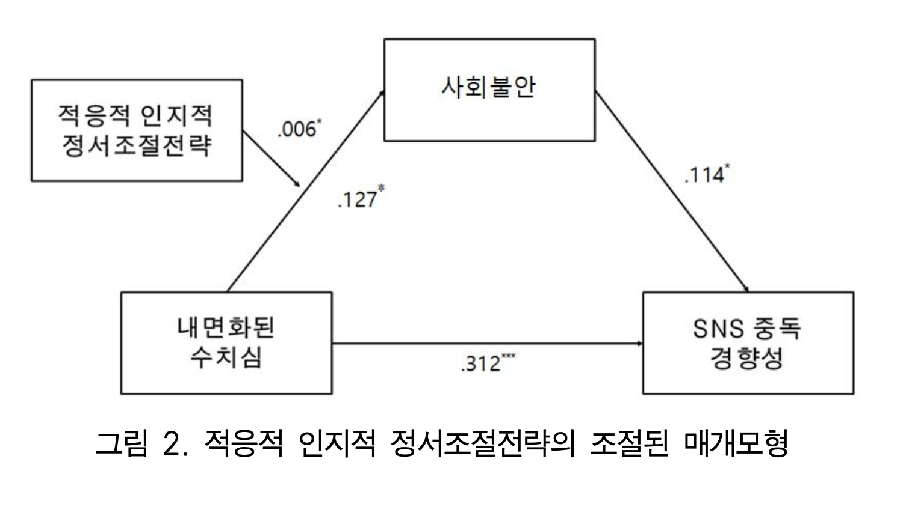
사람 중심 연구 설계
이질적인 집단을 대상으로 할 때, 그 이질성을 통계적 분석을 통해 파악하여, 몇 개의 군집으로 나누어 군집에 따른 효과의 차이를 고려하려는 노력
- 예를 들어, 학업적 어려움은 다양한 문제(학습장애, 우울, 주의력 결핍, 문제행동 등)과 연관되어 있는데, 이를 고려하지 않는 개입은 효과가 떨어질 수 있음.
- 즉, 대상을 각 문제를 가진 군집으로 나누어 개입을 설계하는 것이 효과적일 수 있음.
- 이러한 군집은 자료를 탐색적으로 분석하여 통계적 방법을 통해 얻을 수 있음.
크게 3가지로 나누어 보면; 군집 분석, 잠재 범주/프로파일 분석, 성장 혼합 분석
군집 분석
군집의 대상은 예를 들어,
- 대상: 상담자 진술
- 사람: 상담 센터 내담자
- 변수: 검사 문항
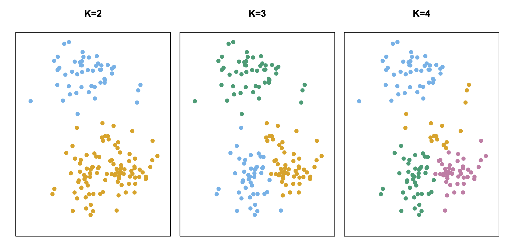
Source: Introduction to Statistical Learning with Application in R (2e) by Gareth James, Daniela Witten, Trevor Hastie and Robert Tibshirani
- 몇 개의 군집으로 나눌지 통계적으로 분명하지 않는 것이 일반적
- 연구자는 이론에 의해 지지 받을 수 있는 군집의 수를 선택하고,
- 그 기저에 있는 동질성이나 구성개념을 파악하게 됨.
Rice & Slaney (2002) 연구
참여자 학생들을 (1) 적응적 완벽주의자, (2) 부적응적 완벽주의자, (3) 비완벽주의자로 분류
- Almost Perfect Scale-Revised 척도(Slaney et al., 1996)를 이용
- High Standards: 높은 기준 하위 척도(7개 항목)는 성과와 성취에 대한 높은 개인적 기준을 가지고 있는지를 측정합니다.
- Order: 질서 하위 척도(4개 항목)는 질서정연함과 깔끔함에 대한 선호도를 측정합니다.
- Discrepancy:불일치 하위 척도(12개 항목)는 응답자가 스스로 성과에 대한 개인적 기준을 충족하지 못한다고 인식하는 정도를 측정합니다. (번역 by DeepL)
- 기존의 Hamackek (1978)의 완벽주의 유형에 대한 개념화에 대한 정량적 검증
Grzegorek, Slaney, Franze, & Rice (2004) 연구
- 위의 군집에 대한 개념화를 토대로 이론에서 유도된 가설을 검증
- 부적응적 완벽주의자: 더 높은 자기비판과 우울
- 적응적 완벽주의자: 더 높은 자기존중감
Whittrack & Neville (2010) 연구
- 317명의 흑인 대학생들을 대상
- 크로스 인종 정체감 척도 (Cross Racial Identity Scale, CRIS)를 이용
- 접촉 전 동화 (Pre-encounter Assimilation, PA): “나는 어느 한 인종 집단의 구성원이라기보다는 그냥 미국인이다.”
- 접촉 전 잘못된 교육 (Pre-encounter Miseducation, PM): “흑인은 열심히 일하는 것보다 좋은 시간을 갖는 데 더 가치를 둔다.”
- 접촉 전 자기혐오 (Pre-encounter Self-hatred, PSH): “솔직히 말하면, 나는 내가 흑인이라는 것이 싫다.”
- 백인 혐오 몰두-출현 (Immersion-Emersion, IEAW): “나는 백인들 모두에게 증오와 경멸감을 갖고 있다.”
- 내면화된 흑인 중심성 (Internalization Afrocentric, IA): “나는 흑인 중심의 관점에서 세상을 보고 생각한다.”
- 내면화된 다문화적 포용성 (Internalization Multiculturalists Inclusive, IMCI): “다문화주의자로서 나는 히스패닉, 아시아계 미국인, 백인, 유태인, 게이, 레즈비언 등 많은 집단과 연결되어 있다.”
- 군집분석 결과 5개의 군집으로 분류:
- 낮은 인종 부각(Low Race Salience): 인종을 긍정적이거나 부정적인 것으로 초점을 맞추거나 중요시하지 않음.
- 다문화주의자(Multiculturalist): 주로 다문화주의적 태도를 지지하며, 이는 인종 정체성에 다문화적 초점을 통합하는 데 관심이 있음을 반영.
- 자기 증오(Self-hatred)
- 몰두(Immersion)
- 흑인 중심(Afrocentric): 이전 클러스터의 자기 증오와 잘못된 교육 측면이 결여된, 강한 긍정적 흑인 정체성을 지님.
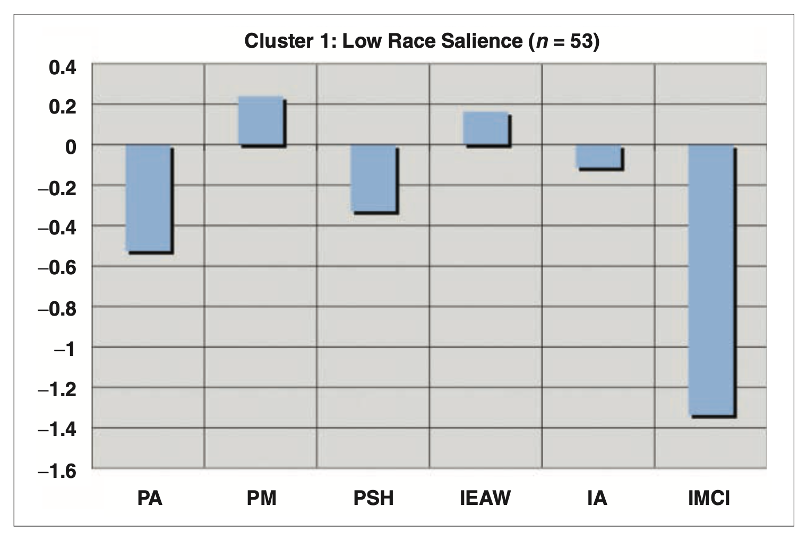
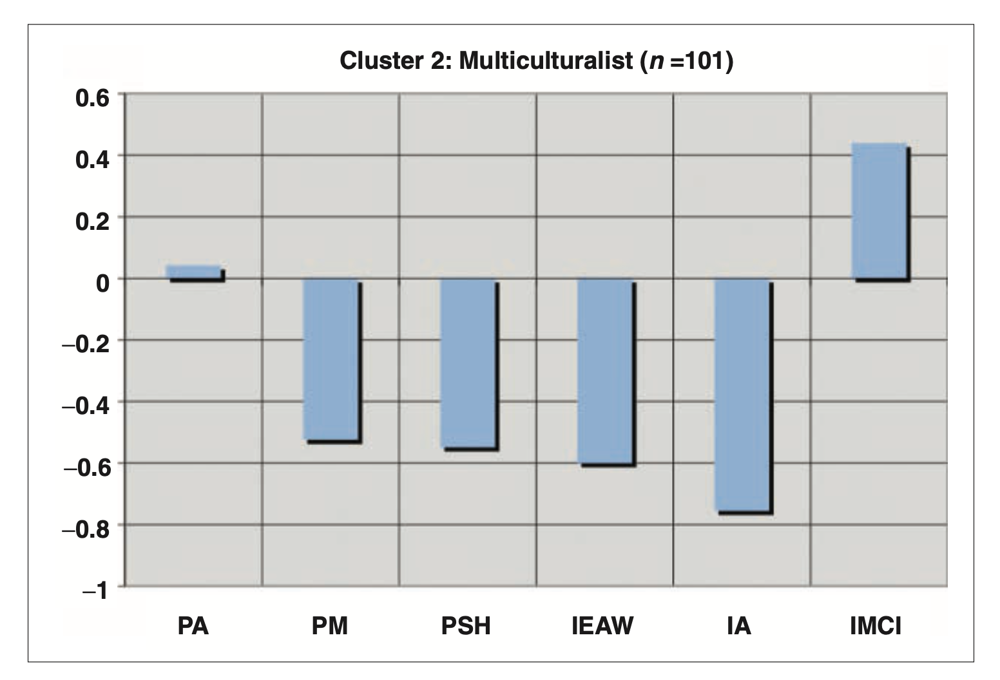
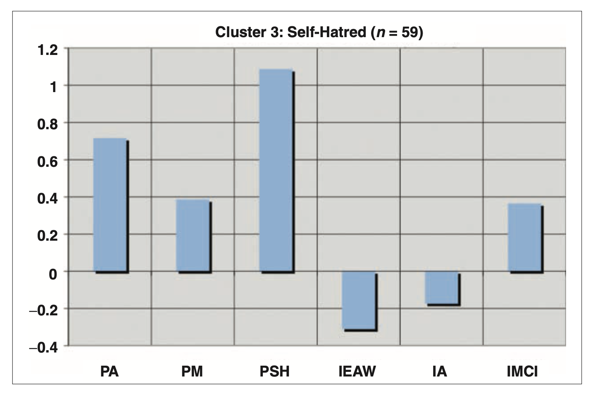
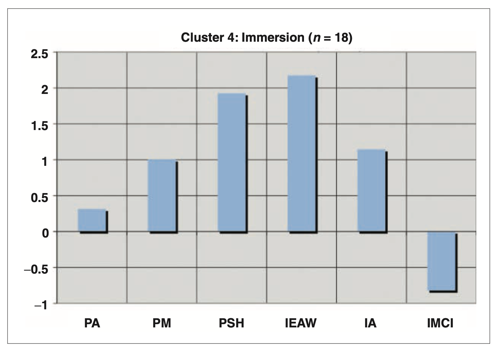
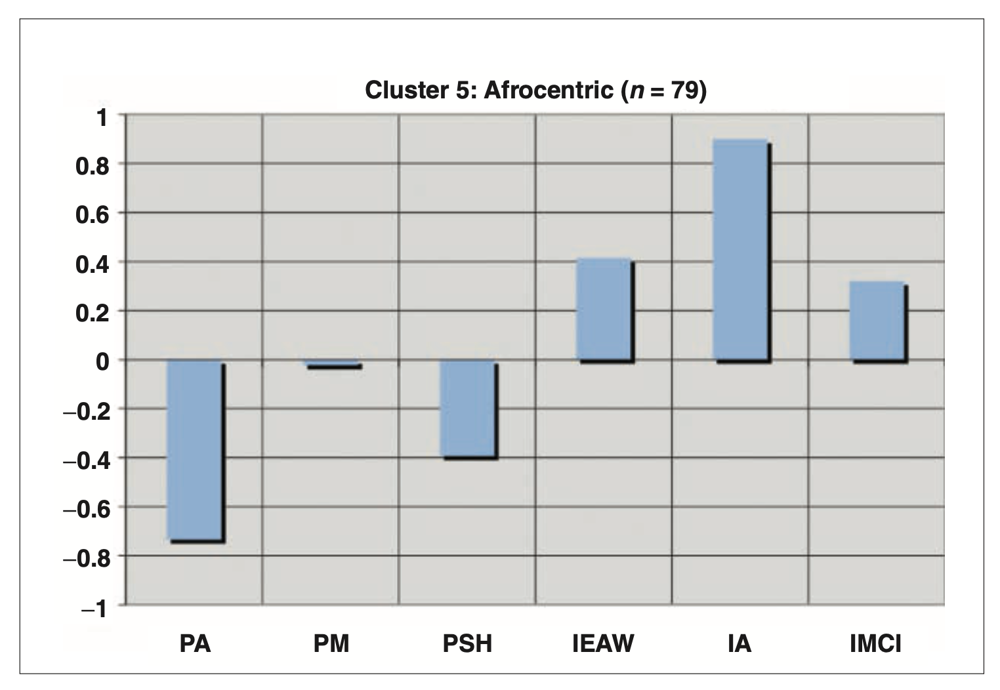
- 군집들 간 심리적 속성을 비교: (1) 정신건강 질문지, (2) 삶의 만족도 척도,(3) 개인적 관점 설문지
- 다문화 집단(Multiculturalist): 세 척도 모두에서 보다 높은 수준의 심리적 안녕감 보고
- 몰두 집단(Immersion): 더 낮은 수준의 심리적 안녕감 보고
잠재 범주/프로파일 분석
구조방정식(SEM) 모형을 이용하여, 좀 더 진전된 군집분석 방식
각 개인을 각 범주에 단순히 할당하기보다는 각 “잠재 범주”(latent class)에 속할 확률을 계산
- 예를 들어, A는 “적응적 완벽주의”에 속할 확률이 93%, “부적응적 완벽주의”에 속할 확률이 6%, “비완벽주의”에 속할 확률이 1%임.
예) Brauner, C., Wöhrmann, A. M., Frank, K., & Michel, A. (2019). Health and work-life balance across types of work schedules: A latent class analysis. Applied Ergonomics, 81, 102906.
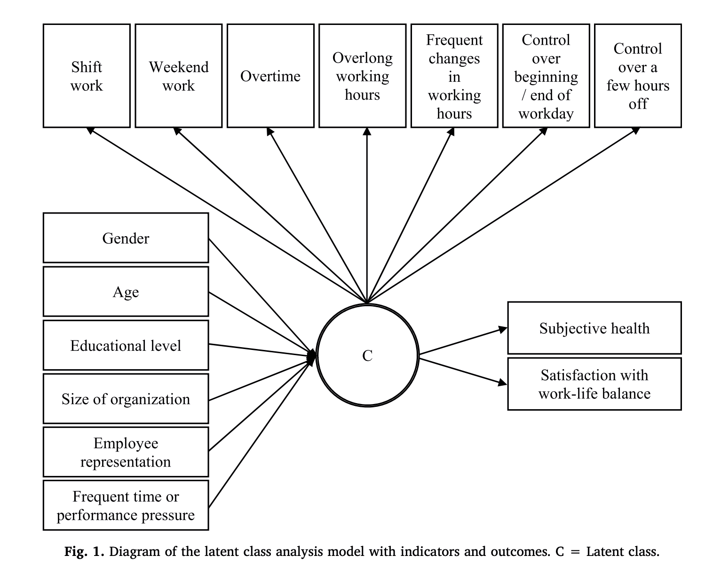
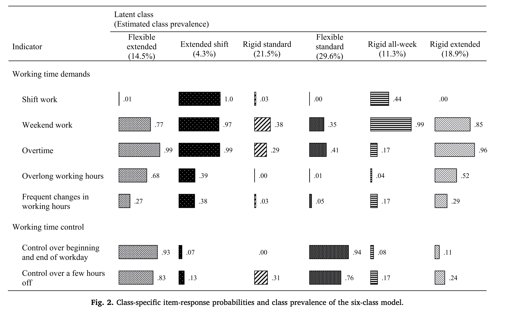
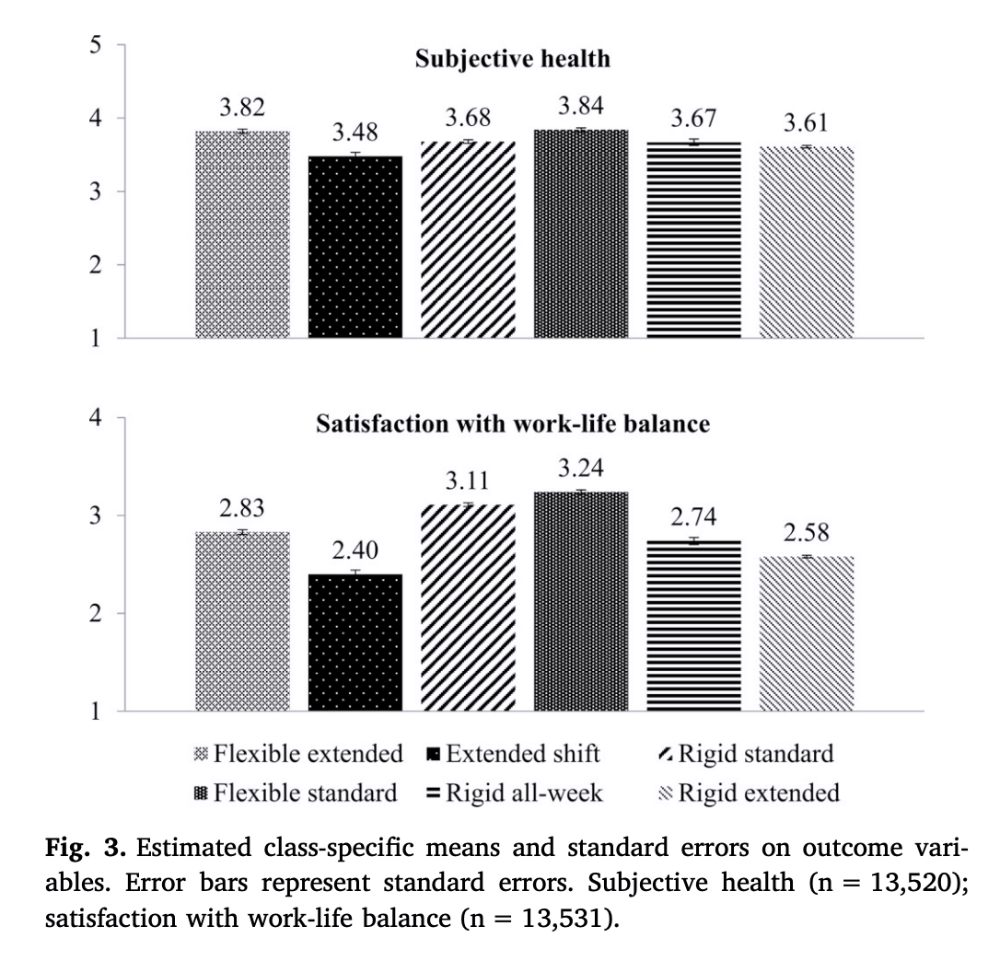
성장 혼합 모델링
개인의 변화를 측정하여(종단 연구) 통해 “두드러진 변화 양상”을 보이는 개인들로 군집화
Wang 등(2012)의 연구
- 중국인 유학생을 대상으로, 학기 전 + 이후 3 학기 동안 심리적 스트레스의 궤적을 조사
- 서로 다른 패턴으로 적응할 것이라는 가정
- 4개의 패턴으로 군집화
- 4 시점에서 모두 높은 수준으로 유지 (유지, 10%)
- 도착 전부터 1 학기까지 감소 (완화, 14%)
- 증가하다 2학기에 정점을 이룸 (문화 충격, 11%)
- 일관성있게 낮게 유지 (적응, 65%)
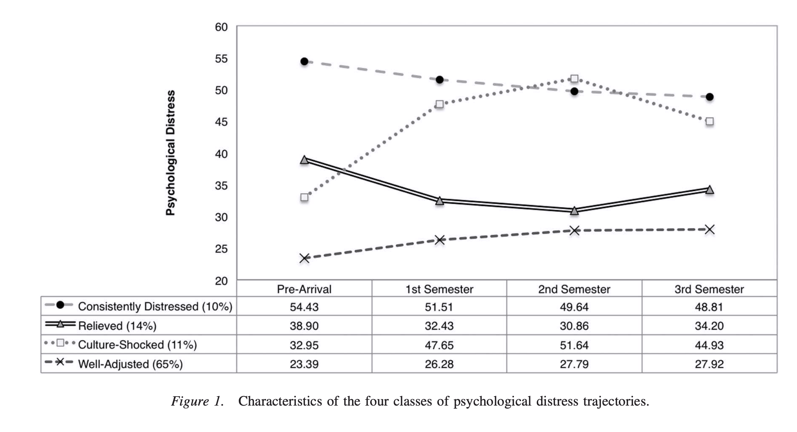
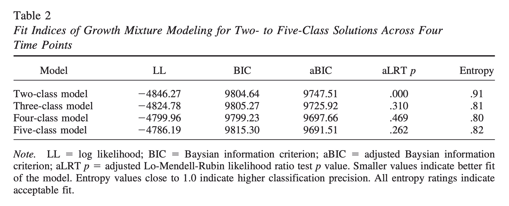
- 적응 궤적의 패턴과 관련있는 변수들 (시작시)
- 더 높은 수준의 자아존중감
- 문제해결 능력에 대한 긍정적 평가
- 미국에서 공부하기 전 더 낮은 부적응적 완벽주의
- 미국 문화로의 유연한 전환과 관련된 요소 (과정 중)
- 미국 유학 첫 학기 동안 균형 잡힌 사회적 지지 (가족, 고국의 친구들, 다른 유학생들)
- 스트레스 대처 전략: acceptance, reframing, striving